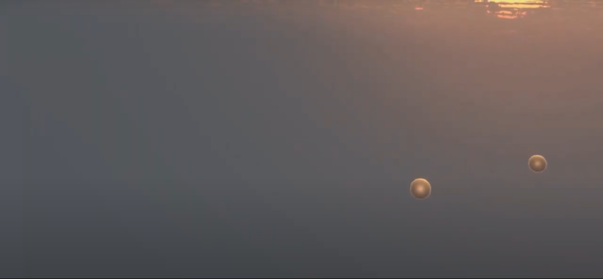

Projects I've Worked On
Book of Adventum

An old-school adventure/FPS developed by Dark Amber Softworks.
My contributions include part of the soundtrack (as Cyborg See Cyborg Do), a couple of voiceovers, Russian localization of all in-game text, and social media marketing.
Book of Adventum is available for PC on Steam.
Demonic Delight

A small Godot-based adventure/platformer game.
I joined the team on short notice to help prepare the demo for release. My contributions include coding most of the audio-related logic in the game along with some other interactions (such as level transitions).
The project has been released on itch.io.
WIP: Case Rajamuseo

A Unity-based Android app for Rajamuseo (the Border Guard Museum) in Imatra, Finland.
The app will allow museum visitors to create their own passport and go on a treasure hunt-like adventure during their tour. I'm tasked with coding various UI interactions along with creating some of the app's sounds.
The project is a cooperation between Rajamuseo and XAMK (South-Eastern Finland University of Applied Sciences). Read more on the XAMK page.
WIP: VR Generative Music App

A Unity-based prototype which can generate ambient soundscapes out of given audio files.
The currently built scene spawns spheres around the listener at randomized time intervals. Each sphere plays a random audio loop (recorded by me) out of a given selection. The spheres go on to move around the listener, resulting in a constantly changing soundtrack. Here's a brief screencap.
The project can be found on my GitHub page.
WIP: A Yet-Unnamed Visual Novel / Adventure Game
A Godot-based game set in the Book of Adventum universe. Currently in the early stages of production at Dark Amber Softworks.
The game will combine visual novel elements with Myst-like gameplay. My responsibilities include all coding and some music/sound design for the game.
Release planned for 2023.
© Rostislav Goncharov, 2022